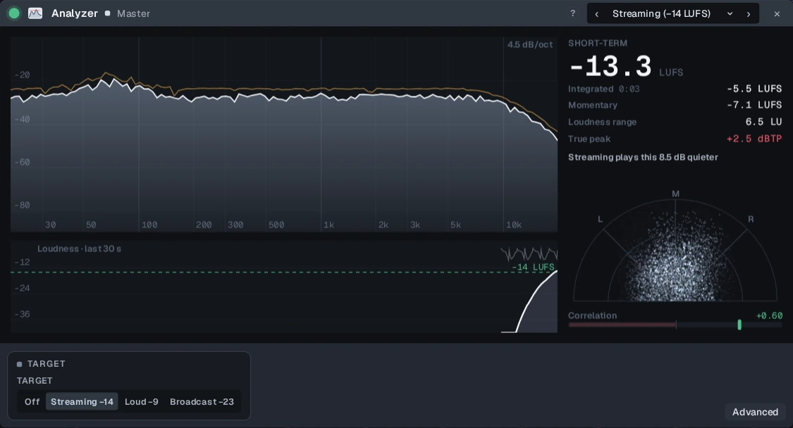

Loudness and peaks
Mastering prepares the whole mix for release. Fix a buried vocal or an overpowering kick in the mix first. Changes on the Master affect everything.
- LUFS
- Estimated perceived loudness. Integrated LUFS summarizes the measured playback.
- dBTP
- True peak. Estimates how high the reconstructed signal reaches between digital samples.
- Gain reduction
- How many decibels a processor is turning down at that moment.
Master
Listens to the Playlist and sets tone, compression, width, clipping, and limiting for the selected Target. The loudness target sets the desired average level. Ceiling sets the true-peak limit.
- On the Master insert, add Master after your mix effects. Choose a Target, such as Streaming −14, then use Listen to the song or Listen again.
- Enable Level match and toggle power while you listen to the loudest section. Compare bass, vocal clarity, and drum attack at a similar loudness.
- If the effect reports it stopped short of the target, listen for peak distortion before turning up Loudness. Disable Level match before checking the finished level or exporting.

Analyzer
Measures the signal without changing it. The spectrum shows frequency balance, the stereo display shows left/right behavior, and the loudness view shows LUFS and true peak. Its Target is a reference line.
Try it. Add a fresh Analyzer after the last effect on the Master insert and play the full song once without looping. Compare integrated LUFS and true peak. A louder chorus may raise the whole-song measurement while the highest true peak comes from a single earlier hit.

